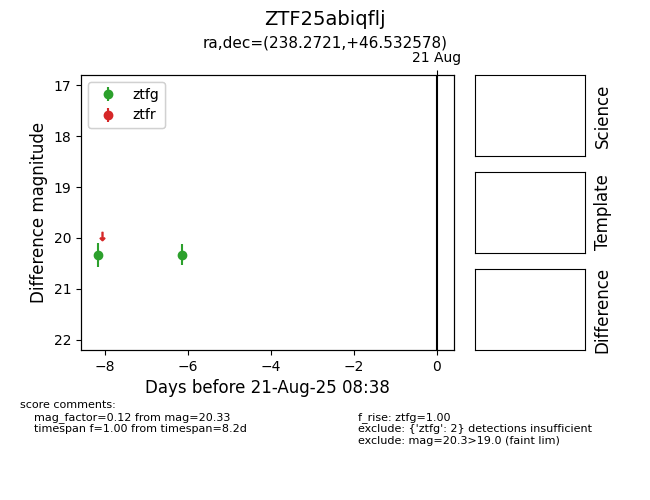

Target ZTF25abiqflj at 2025-08-21 08:38, see:
FINK: fink-portal.org/ZTF25abiqflj
Lasair: lasair-ztf.lsst.ac.uk/objects/ZTF25abiqflj
ALeRCE: alerce.online/object/ZTF25abiqflj
alt names
ZTF25abiqflj (ztf,alerce)
coordinates:
equatorial (ra, dec) = (238.2721,+46.53258)
galactic (l, b) = (73.9196,+49.52961)
photometry
last ztfg=20.33
2 ztfg detections
